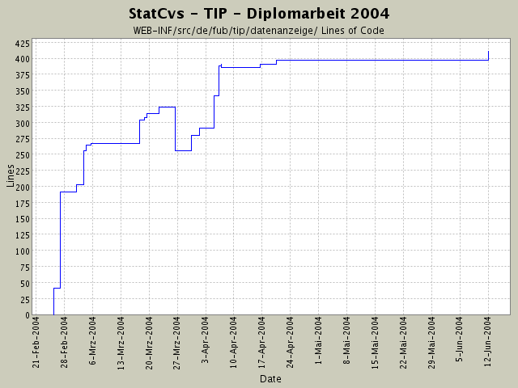

Summary Period: 2004-02-25 to 2004-06-11
[root]/WEB-INF/src/de/fub/tip/datenanzeige
 beans
(2 files, 177 lines)
beans
(2 files, 177 lines)
 container
(6 files, 569 lines)
container
(6 files, 569 lines)
 ormapper
(14 files, 1859 lines)
ormapper
(14 files, 1859 lines)

Total Lines Of Code:
411 (2004-06-13 13:05)
| Author | Changes | Lines of Code | Lines per Change |
|---|---|---|---|
| hirsch | 30 (100.0%) | 583 (100.0%) | 19.4 |
Alle VOs sind jetzt in ihren toString()-Methoden
ohne NullPointer-Aufkommen - damit kann man auch halbgeladene
Bohnen ausgeben und kriegt keine Fehler mehr !
18 lines of code changed in:
SightGruppeVO + Container + Anzeige implementiert.
Darstellung angepasst (JSP-Seiten, andere ResourceBundle Inhalte)
9 lines of code changed in:
Koordinate:
serialisierbar gemacht, damit Tomcat beim Speichern
von SESSIONDaten auch Koordinaten serialisieren kann.
ThemenBearbeiter:
Container ist jetzt methodenlokale Variable!
DB-Verbindungen werden jetzt sauber geschlossen.
7 lines of code changed in:
Refactoring - Anpassen von JavaDoc,
Entfernen von LoggingAufrufen.
StandortPruefer:
jetzt wird auch für die Eingabe von Koordinaten in der DB
nach einerm Standortbezeichner gesucht.
2 lines of code changed in:
ungültige Standorte kommen noch durch!
2 lines of code changed in:
POLYGON in Koordinate umwandeln angepasst.
11 lines of code changed in:
zusätzliches Logging der Logik eingebaut - damit ich endlich diesen
Fehler finde ...
48 lines of code changed in:
komplettes Dokumentieren der einzelnen Packages nach dem heute
rausgefundenen Schema von SUN -
juchhe!
Viel Tipparbeit - aber jetzt sieht das Javadoc-Resultat
wenigstens wie eine Anwendung aus.
Die neue statcvs-Version ist auch sehr gut!
50 lines of code changed in:
EreignishistorienBearbeiter mit Fabrik implementiert.
EventVO kleine Anpassungen -
es wird nur noch von Punkten als Ortsangabe ausgegangen.
Das ist sinnvoll, da der User ja immer an einem Punkt ist.
Auch die GPS-Ortung erfolgt nicht als Polygon, sondern immer nur
als Punkt.
23 lines of code changed in:
Koordinate: Umwandlung nach Postgis hinzugefügt,
Logik für Eventhistorienanzeige angefangen,
Container vervollständigt
26 lines of code changed in:
Veränderungen an der PACKAGE-Struktur,
Hinzufügen neuer VO-Klassen nach gestriger Kotanalyse von
Katjas Quelldateien.
Nur leere Klassenrümpfe da bisher ...
0 lines of code changed in:
Holen der Daten aus der Session geht,
irgendwas stimmt mit den Parametern für das PreparedStatement nicht
14 lines of code changed in:
SightVOContainer:
Probleme mit ConcurrentModificationException gelöst:
Iterator wird bei jedem add() neu erzeugt,
EL geht jetzt ohne Fehler und ClassCastException -
leider wird nix angezeigt ...
12 lines of code changed in:
JSTL-Experimente und Veränderung im Container
implements Iterator jetzt ...
21 lines of code changed in:
Javadoc fertiggemacht und bei Ausnahmen ein Packages wegreationalisiert
bzw. umgestaltet
59 lines of code changed in:
JavaDoc - Umstellung von lokalen auf Klassenvariablen bei Actions
4 lines of code changed in:
Umstellung auf andere PostresJDBC und PostGIS.jdbc von Steven
EL-Versuche
3 lines of code changed in:
Sehenswürdigkeit Inhalt aus DB werden in Bean gelesen
9 lines of code changed in:
umgestellt auf besseres Design:
Actions geben nur dataSource-Komponente an
Pruefer (= BusinessObject), keine Connection mehr!
10 lines of code changed in:
Datenanzeige aller interessanten Koordinaten
40 lines of code changed in:
(4 more)
Generated by StatCvs v0.2-dev